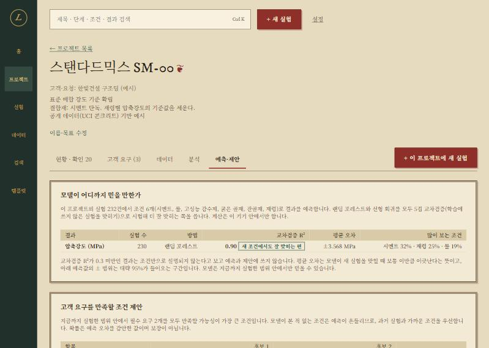
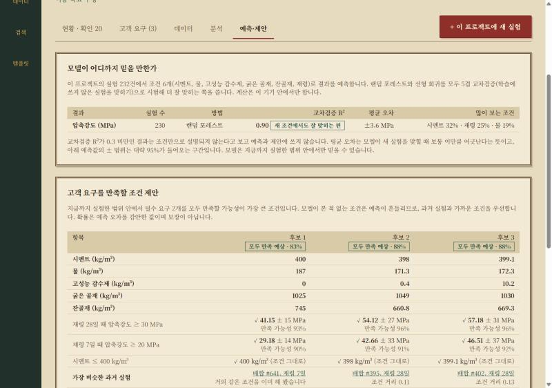
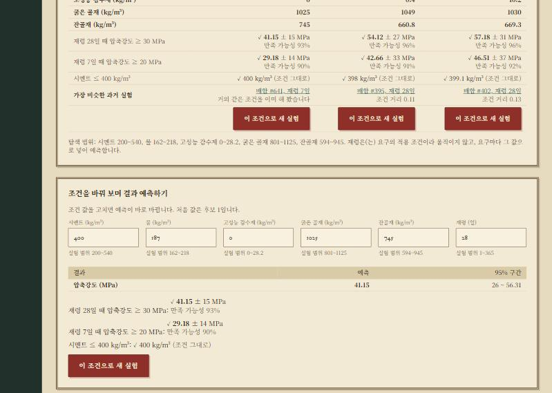
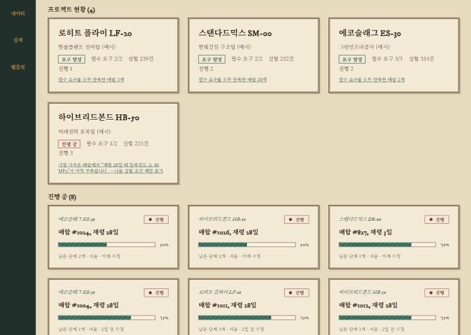
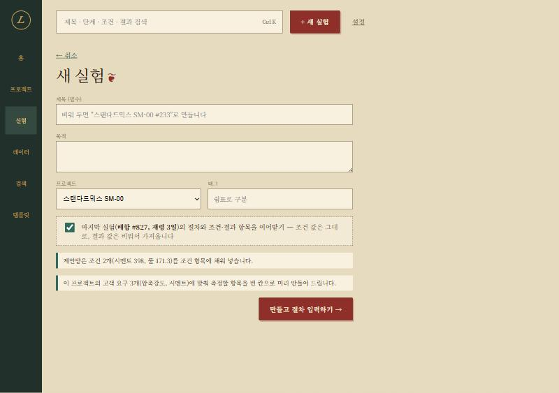

조건 → 결과 예측, 고객 요구를 만족할 조건 제안. 화면 하나, 개념 둘로.
제품개발팀 공유용 · 2026-11-07 · 예시 데이터는 UCI 콘크리트 공개 데이터
lablog는 흩어진 실험 기록을 한곳에 모으고(s1), 찾고(s2), 다시 쓰고(s3), 고객 요구를 만족했는지 판정하는 데까지 왔습니다.
그런데 연구원이 매일 묻는 질문에는 답하지 못했습니다.
산점도와 상관표를 보고 머릿속으로 짐작해 조건을 정한다.
실험 한 건이 하루 이상 걸리는 일이 많아, 짐작이 빗나가면 그만큼 시간이 간다.
원인: 모인 데이터로 "예측"하는 기능이 없었다. 분석은 과거를 설명할 뿐, 미래를 말하지 않는다.
원칙은 그대로: 기능을 많이 더하지 않고, 이 빈칸 하나를 메운다. 데이터는 브라우저 밖으로 나가지 않는다.
결과마다 모델을 만들고 교차검증 R²와 평균 오차를 먼저 보여 준다. 낮으면 쓰지 않는다.
필수 요구를 모두 만족할 가능성이 가장 큰 조건 3가지. 요구마다 예측값 ± 오차와 만족 가능성 %.
조건 값을 고치면 결과 예측과 요구 판정이 바로 바뀐다. 범위 밖이면 경고.
새 개념은 둘뿐입니다: 예측값과 만족 가능성. 나머지는 이미 쓰던 고객 요구, 조건·결과 항목, 새 실험 흐름을 그대로 씁니다.




홈 카드와 현황 배너가 "진행 중"인 프로젝트를 예측·제안 탭으로 보낸다.

제안을 받고 실험을 등록하기까지 클릭 세 번. 이어받기·템플릿과도 함께 쓴다.
| 단계 | 방법 |
|---|---|
| 입력·출력 | 숫자 값이 10건 이상인 조건(입력)과 결과(출력). 빈 조건은 중앙값으로 채움 |
| 모델 | 랜덤 포레스트(나무 80그루) vs 능형회귀. 5겹 교차검증 R²가 큰 쪽 |
| 예측 오차 | 교차검증 잔차 표준편차 ⊕ 나무들의 흩어짐(본 적 없는 조건일수록 커짐). ±는 1.96배 |
| 만족 가능성 | 예측값이 요구 경계를 넘을 확률 Φ(여유 ÷ 오차) |
| 조건 제안 | 범위 안 무작위 1,500점 + 과거 실험을 점수 매김(필수 요구 log 확률 합 − 과거 실험과의 거리) → 상위 15개 다듬기 → 서로 다른 3개 |
| 속도 | 실험 1,020건 학습 1.8초, 230건 0.2초, 조건 제안 50 ms 이하 |
docs/phase10/00-예측과-제안.md실행: app/에서 npm install → npm run dev → 프로젝트 열기 → "예측·제안" 탭. 예시 데이터는 처음 열 때 자동으로 들어간다.